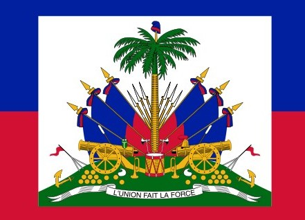

Kerlando Fucien
About Me
My name is Kerlando Fucien. I'm from North Haiti, I live in Massachusetts,United State. I am currently studying Software Development through BYU-Idaho.I am a professional accounting and a CEO from Family Z Services LLC. I enjoy Web Development,technology,and helping people through my business.

Cap-Haitian, Haiti

Haiti is a beautiful Caribbean country known for its rich culture,history,music,art,and strong people. Specially in the North Haiti (Cap-Haitian) there are to many building history like citadel I am proud to be from North Haiti.